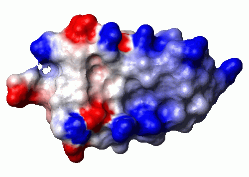

ReadPdb 1pit.pdb
(File->Read Mol->PDB)
Read the structures from the given file in PDB format.
DialSelect on
(Button:selection)
Open the selection dialog.
SelectMol 'num > 1'
(Dialog:Select)
We only want to plot of the surface of the first of the
20 structures, so we select all but the first...
RemoveMol
(Edit->Structure->Remove Mol)
... and remove them.
SelectAtom ''
(Dialog:Select)
The standard orientation for BPTI is the one where the pricipal
axes are aligned to the coordinate axes. So we select all atoms...
Fit to_axes
(Edit->Fit)
... and do the alignment.
XMacStand pdb_charge.mac
(File->Macro->Execute Standard)
For calculating the electrostatic potential, it is very
important to have the proper charge for all residues. Since
the charges are normally not given in a PDB file, we call
this macro that does the typically necessary changes, like
GLU to GLU-. You should manually check whether all charges
are correct before calculating the potential. In this case
we notice that we are missing the charges at the termini,
because the sequence in the file just starts with an ARG
and ends with an ALA.
SelectRes ':1'
(Dialog:Select)
So we select the first residue...
ChangeRes atoms 'NARG'
(Edit->Structure->Change Res)
And convert it to NARG, the form of ARG with an N-terminal
group, maintaining the old coordinates.
CalcAtom 'HN*'
(Calc->Atom)
It is not really needed for this example, but for
demonstration purpose we calculate the coordinates of the
HN2 and HN3 that are missing because these atoms did not
exist in the ARG residue that we originally read from the
file.
SelectRes ':58'
(Dialog:Select)
The same way we select the last residue...
ChangeRes atoms 'CALA'
(Edit->Structure->Change Res)
... convert it to CALA, the form of ALA with a C-terminal
group...
CalcAtom 'O*'
(Calc->Atom)
... and calculate the coordinates of OA and OB. These we
actually need, because they hold charges.
SelectAtom 'heavy'
(Dialog:Select)
We only use the heavy atoms for calculating potential and surface.
If protons are also used, they "dampen" the charges visible at
the surface, which leads to less clear pictures.
CalcPot (vdw) (simplecharge) 2 80 1.4 0.3 2 10 zero 'bpti.pot'
(Calc->Potential)
Now we can calculate the electrostatic potential, storing the
result in the file bpti.pot. Check the help page for
details about the arguments. We accept the defaults, except for
the charge, where we choose the simple model without partial
charges, only charges located on one or two atoms of each
charged residue. Note that the current drawing precision
(see DrawPrec) determines the grid width for the
calculation, we keep the default of 3 that leads to a grid
spacing of 1 Angstrom.
AddSurface (vdw) contact 1.4 shaded 0
(Prim->Surface->Add)
Calculate the contact surface.
ReadPot bpti.pot
(File->Read Potential)
Read the previously calculated potential. The values are
now mapped onto the surface, so this step has to be executed
after calculating the surface.
PaintSurface pot 0.0 1.4 0.2 3 '-0.5 1 0 0 0.0 1 1 1 0.5 0 0 1'
(Prim->Surface->Paint)
Define how the surface is colored. We choose calculating the
color from the previously read potential. The second to fifth
arguments are not used in this case, the last argument gives
the mapping from potential to color, see the help page for
details.
PlotPar 21 29.7 18 0 500 0 1 1 0 3 1.0 75
(Options->Plot->Parameters)
Adapt the plot paramters to our needs. Read the online manual
page carefully, understanding these parameters is very important
for using the program successfully!
PlotTiff example4.tif
(File->Plot->TIFF)
Create a TIFF plot. External tools were used for the conversion
to GIF used for this page.
WriteDump example4.mml
(File->Write Dump)
Save the current state for later use.
Quit no
(File->Quit)
Quit the program. Because we already saved a dump file, there is
no need for saving the program state again.
UserInterface 0 0 1 1 1 1 ReadPdb 1pit.pdb DialSelect on SelectMol 'num > 1' RemoveMol SelectAtom '' Fit to_axes XMacStand pdb_charge.mac SelectRes ':1' ChangeRes atoms 'NARG' CalcAtom 'HN*' SelectRes ':58' ChangeRes atoms 'CALA' CalcAtom 'O*' SelectAtom 'heavy' CalcPot vdw simplecharge 2 80 1.4 0.3 2 10 zero 'bpti.pot' AddSurface vdw contact 1.4 shaded 0 ReadPot bpti.pot PaintSurface pot 0.0 1.4 0.2 3 '-0.5 1 0 0 0.0 1 1 1 0.5 0 0 1' PlotPar 21 29.7 18 0 500 0 1 1 0 3 1.0 75 PlotTiff example4.tif WriteDump example4.mol Quit no
Reto Koradi, kor@mol.biol.ethz.ch